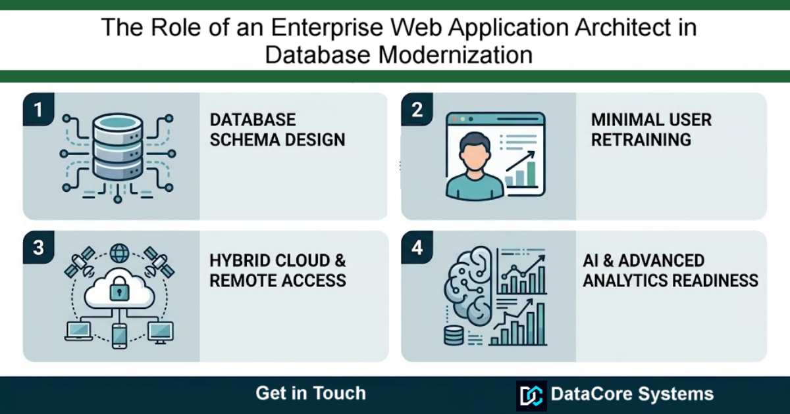

The Role of an Enterprise Web Application Architect in Database Modernization
Modern enterprise applications require robust backend systems that can handle complex business logic, multi-user concurrency, and massive data volume without sacrificing reliability. This is where an Enterprise Web Application Architect becomes essential.
An application architect bridges the gap between legacy desktop databases and high-performance web systems. Rather than simply writing code, the architect designs end-to-end software frameworks that prioritize data integrity, system security, and scalability.

Core Responsibilities of an Application Architect
Database Schema Design: Structuring relational schemas (such as SQL Server or MySQL) to eliminate write conflicts and optimize indexing.
Hybrid & Offline-First Strategy: Implementing client-side storage (like SQLite WASM) with background synchronization worker engines to ensure zero application downtime during network outages.
System Refactoring: Migrating fragile legacy macro routines (such as Excel VBA or Access front-ends) into structured web APIs and automated Python pipelines.
By establishing clear architectural standards, enterprise architects prevent structural tech debt and ensure business software remains stable as organizations expand.
Looking for expert architecture guidance? DataCore Systems specializes in enterprise database migrations, offline-first web applications, and SQL Server backend modernization.
Get in Touch